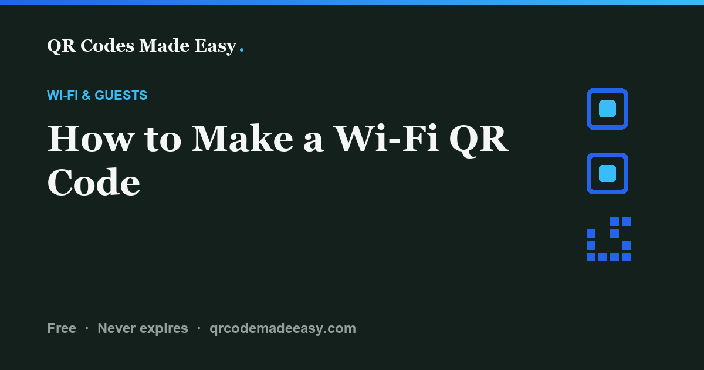

How to Make a Wi-Fi QR Code

Make a Wi-Fi QR code for a guest network, not your private network. Enter its name, password, and security type in the Wi-Fi tab, then download a PNG or SVG. Anyone with the image can read the password. The static pattern has no expiry date, but joining still depends on compatible phones, a reachable network, and unchanged credentials.
Make it (Wi-Fi tab, 2 minutes)
First, enable a guest network in your router settings and check whether guest isolation is on; a separate network name alone does not prove visitors cannot reach your other devices. If you do not manage the router, ask its owner. Then open the tool and pick the Wi-Fi tab.
- Network name (SSID). Enter it exactly as it appears in your router settings, including capitalization and any leading or trailing spaces. Do not add quotation marks around it.
- Password. The one guests would normally type. If your password has odd characters in it, don't worry. The tool escapes special characters for you automatically.
- Security type. Match your router's security setting. The WPA / WPA2 / WPA3 choice writes the common WPA payload; it is not a guarantee that every phone will join a WPA3-only network. WEP is a legacy option, not a recommendation. Open means no password. This form does not support enterprise networks that require a username or certificate.
- Hidden network. Tick this checkbox only if your router doesn't broadcast the network name. Most don't need it.
Hit download and you get a PNG up to 4000px or a vector SVG that scales to any size without going fuzzy. The tool warns you if your colors don't have enough contrast to scan, and the quiet margin (the blank border scanners need) is always included. That's it. No account, and the code is generated entirely in your browser.
How scan-to-join actually works
The code contains a WIFI: text payload, not a link to a password service. A compatible phone reads the network name, security type, and password and offers to join. Camera and operating-system support varies, so test the phones your guests use. A code does not bypass a captive portal or a network's access restrictions.
Notice what's missing from that description: the internet. The phone doesn't need a connection to read the code, because everything it needs lives in the squares. Which is the whole point. The person scanning doesn't have Wi-Fi yet. A code that required internet to hand out internet would be a bad joke.
This is also why a static Wi-Fi code from this tool never expires. There's no server in the middle that can lapse or go dark. The code you print today works for as long as your network exists with those credentials.
A synthetic example you can check
For the fictional network Guest;Net with the example password test:pass, the generator encodes WIFI:T:WPA;S:Guest\;Net;P:test\:pass;;. The backslashes escape punctuation; do not type them into the form yourself. Do not use this example password for a real network.
Our automated check decodes actual PNG and SVG exports and also checks that spaces at the start and end of an SSID survive. This verifies the encoded text, not a physical phone joining a router. The payload format and escaping are documented in ZXing's Wi-Fi format reference.
Test joining, not just scanning
- Download the actual file and scan it on an iPhone and an Android phone you can test. Keep the network name and manual connection instructions available as a fallback.
- Use a test phone that is not already connected or relying on a saved password. Confirm the correct guest network appears and that joining succeeds.
- Check that a page loads over Wi-Fi, not cellular data. Complete any guest portal separately; the QR code cannot accept its terms for you.
- Print a proof at the intended size and placement. Scan through the real frame or stand, with typical lighting. Keep the blank margin intact. Use the print-size calculator as a starting point.
If you only need to share access with someone nearby, you may not need a generator: Google documents Pixel's built-in Share Wi-Fi QR option. This tool is useful when you want a separate printable PNG or SVG in your own design.
Turn the code into a guest Wi-Fi sign
Open the free guest Wi-Fi sign template. Add your network name and downloaded PNG. The template places the image; it does not change or verify its encoded contents.
- Use a guest network and check its isolation settings.
- Download the Wi-Fi code as a square PNG, with its margin intact.
- Add the image to the template. Test joining before confirming the print step.
- Print at actual size or save a PDF. Test the finished sign through its frame or stand.
The template does not upload or save your inputs. Treat the sign and saved PDF as shared network credentials. Download the blank HTML template to use it offline.
Use the before-you-print checklist to record the phones, distance, and result. If the pattern is recognized but joining fails, check the network. Otherwise, start with the troubleshooting decision table.
Where to put it
Anywhere you're tired of spelling the password out loud.
- Cafes and restaurants. Table tents, by the register, on the community board. If you already print a QR code for your menu, label the menu and Wi-Fi codes separately and leave enough space to aim at the intended one.
- Guest rooms and rentals. Framed on the nightstand or tucked into the welcome binder. Guests join before they've even unpacked, and nobody texts you at 11pm asking for the password.
- Offices. Reception for visitors, meeting rooms for people hopping on the guest network.
- Events. One code on the welcome sign beats repeating the password over a microphone.
The honest security note
I want to be straight with you about one thing: the password is in the printed code. Anyone who can photograph the code can read the password out of it, exactly like the chalkboard behind the bar. A Wi-Fi QR code is a convenience, not a lock.
So use it for networks you intend to share. A guest network is preferable; confirm its isolation settings with your router's documentation rather than assuming a guest name is enough. Don't print a code for your private home or office network unless you'd be comfortable writing that password on the wall, because that's effectively what you're doing.
One genuine security bonus of this tool: everything happens in your browser. Your network name and password never touch a server, mine or anyone else's. The code is built on your machine and the credentials go nowhere.
Change the password, reprint the code
A static code can't be edited after printing. The credentials are baked into the pattern, so if you rotate your Wi-Fi password, the old code is done. The fix is not complicated: make a new code and reprint it. It takes two minutes.
No subscription, no account, and nothing that expires on its own. Reprint if the network name, password, or security settings change. Router outages, range, and phone compatibility can also prevent joining.
For close-up use, try 1.2 to 2 inches across as a starting point, not a guarantee; longer credentials and the finished material can require more space. See the QR print size guide and test a printed proof.
FAQ
How do I make a free Wi-Fi QR code?
Open QR Codes Made Easy, pick the Wi-Fi tab, and enter your network name (SSID), password, and security type (WPA/WPA2/WPA3 for most routers). Download the code as a PNG or SVG and print it. It's free, needs no account, and the code is generated in your browser.
Does a Wi-Fi QR code work on iPhone and Android?
Many iPhone and Android phones can recognize Wi-Fi QR codes, but camera, operating-system, and network support varies. Test the actual phones and network before printing. A successful image scan does not prove that the phone joined.
Is it safe to print my Wi-Fi password in a QR code?
The password is readable by anyone who can photograph the code, so it's the same exposure as writing the password on the wall. Use it for a network you already share openly, ideally a guest network. With this tool, nothing is uploaded anywhere; the code is built entirely in your browser, so your password never touches a server.
What if I change my Wi-Fi password?
Make a new code and reprint it. A static QR code can't be re-pointed after printing because the credentials live inside the pattern. Generating a replacement takes about two minutes and costs nothing.
Does a Wi-Fi QR code need internet to work?
No. The network name, security type, and password all live inside the printed pattern, so the phone reads everything it needs without a connection. That's the point: the person scanning doesn't have Wi-Fi yet.
What size should I print a Wi-Fi QR code?
For close-up use, start around 1.2 to 2 inches across, keep the blank quiet margin, and scan a printed proof at the intended distance. Longer credentials or difficult materials can need a larger code. See the QR print size guide for more detail.
Make your Wi-Fi code
Share guest access without typing the password. Free, built in your browser. Test joining before you print.
Build your QR code